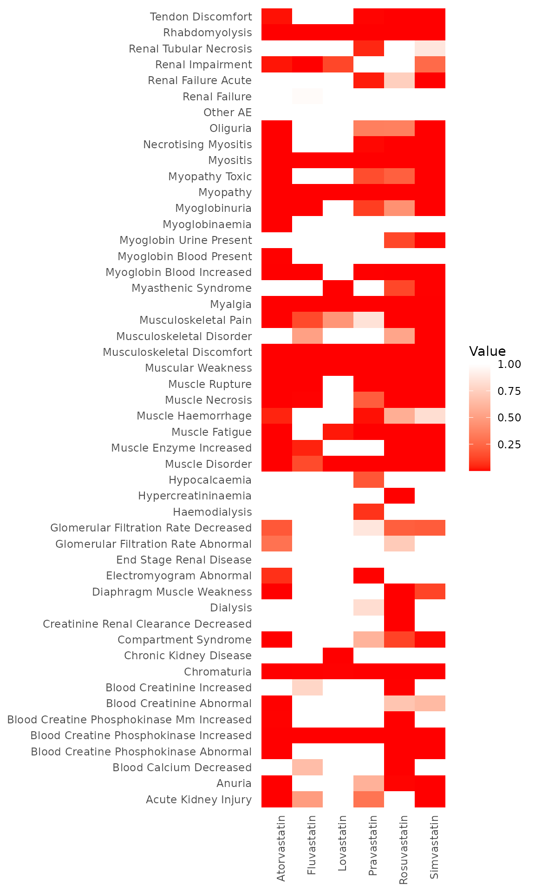

Introduction
This vignette contains various examples that illustrate usage of
MDDC.
Installation
The MDDC package is available on CRAN and can be
installed using the following code. Additionally, the development
version can be found on GitHub.
install.packages("MDDC")We load the MDDC package using the following line:
Dataset
We have included an adverse event dataset curated from FDA Adverse
Event Reporting System (FAERS) called statin49 dataset
which we will be using for describing the functionalities of MDDC.
statin49 was downloaded and processed from the FAERS
database, covering the period from the third quarter of 2014 (Q3 2014)
to the fourth quarter of 2020 (Q4 2020). This dataset is a
contingency table. The first 49 rows represent 49 important adverse
events (AEs) associated with the statin class, while the final row
aggregates the remaining 5,990 AEs.
The dataset AE_idx lists the cluster index of each AE in
the statin49 dataset. The 49 AEs are classified into three
clusters: 1) AEs associated with signs and symptoms of muscle injury, 2)
AEs associated with laboratory tests for muscle injury, and 3) AEs
associated with kidney injury and its laboratory diagnosis and
treatment.
data("statin49")
head(statin49)
#> Atorvastatin Fluvastatin Lovastatin Pravastatin Rosuvastatin
#> Rhabdomyolysis 2041 52 44 163 936
#> Muscle Disorder 291 2 7 21 191
#> Muscle Fatigue 85 0 2 16 30
#> Muscle Haemorrhage 24 0 0 5 13
#> Muscle Necrosis 68 2 0 1 10
#> Muscle Rupture 181 25 0 61 36
#> Simvastatin Other
#> Rhabdomyolysis 1376 31707
#> Muscle Disorder 87 7329
#> Muscle Fatigue 39 4257
#> Muscle Haemorrhage 4 3806
#> Muscle Necrosis 20 662
#> Muscle Rupture 120 3219
data("statin49_AE_idx")
head(statin49_AE_idx)
#> idx AE
#> 1 1 Rhabdomyolysis
#> 2 1 Muscle Disorder
#> 3 1 Muscle Fatigue
#> 4 1 Muscle Haemorrhage
#> 5 1 Muscle Necrosis
#> 6 1 Muscle RuptureAdverse Event (AE) Identification with MDDC
Using Boxplot Method
Our goal is to identify (AE, drug) pairs with abnormally high report counts, specifically those cells with counts significantly exceeding their expected values.
First we perform the analysis using mddc_boxplot(). This
function has five argument:
contin_table: A data matrix of an contingency table with rows representing adverse events and columns representing drugs. We recommend users first check the input contingency table using the functioncheck_and_fix_contin_table().col_specific_cutoff: Logical. In the step 2 of the algorithm, whether to apply the boxplot method to the standardized Pearson residuals within each drug column (default isTRUE) or to the entire table (FALSE).separate: Logical. In the step 2 of the algorithm, whether to separate the standardized Pearson residuals for the zero cells and non zero cells and apply boxplot method separately or together. Default isTRUE.if_col_cor: Logical. In the step 3 of the algorithm, whether to use column (drug) correlation or row (adverse event) correlation. Default isFALSE, indicating the use of adverse event correlation.TRUEindicates the use of drug correlation.cor_lim: A numeric value between 0 and 1. Specifies the correlation threshold to select “connected” adverse events in step 3. Default is 0.8.num_cores: Number of cores used to parallelize the MDDC Boxplot algorithm. Default is 2.
We now perform the MDDC (boxplot) analysis with the
statin49 dataset:
set.seed(42)
test1 <- mddc_boxplot(
contin_table = statin49,
col_specific_cutoff = T,
separate = T,
if_col_cor = F,
cor_lim = 0.8
) The above function outputs a list with three components:
boxplot_signal: An data matrix with entries 1 or 0, indicating the signals identified in the step 2. A value of 1 indicates signals, 0 indicates no signal.corr_signal_pval: An data matrix of p-values for each cell in the contingency table from step 5, when the values are mapped back to the standard normal distribution.corr_signal_adj_pval: An data matrix of the Benjamini-Hochberg adjusted p-values for each cell in step 5. Users can choose whether to usecorr_signal_pvalorcorr_signal_adj_pval, and can set their own p-value threshold (for example, 0.05).
Below, we display the first few rows and columns for each component
of test1. We first check the component
boxplot_signal:
head(test1$boxplot_signal)[,1:5]
#> Atorvastatin Fluvastatin Lovastatin Pravastatin Rosuvastatin
#> Rhabdomyolysis 1 0 0 1 1
#> Muscle Disorder 0 0 0 0 1
#> Muscle Fatigue 0 0 0 0 0
#> Muscle Haemorrhage 0 0 0 0 0
#> Muscle Necrosis 0 0 0 0 0
#> Muscle Rupture 0 0 0 1 0This indicates the pairs (Rhabdomyolysis, Atorvastatin),
(Rhabdomyolysis, Pravastatin), (Muscle Rupture, Pravastatin),
(Rhabdomyolysis, Rosuvastatin), and (Muscle Disorder, Rosuvastatin) are
identified as signals in step 2 of MDDC (boxplot). Now we look at the
second component corr_signal_pval which shows the p-values
of all the cells from step 5:
round(head(test1$corr_signal_pval)[,1:5], digits = 3)
#> Atorvastatin Fluvastatin Lovastatin Pravastatin Rosuvastatin
#> Rhabdomyolysis NA NA NA NA NA
#> Muscle Disorder 0.527 0.974 0.178 0.545 0.000
#> Muscle Fatigue 0.556 0.834 0.252 0.061 0.656
#> Muscle Haemorrhage 0.561 0.635 0.521 0.307 0.570
#> Muscle Necrosis 0.534 0.186 0.869 0.835 0.677
#> Muscle Rupture 0.569 0.019 0.999 0.000 0.678In this output, we observe that the first row, corresponding to the adverse event “Rhabdomyolysis”, does not have associated p-values. This is because, in step 2 of the algorithm, “Rhabdomyolysis” was already identified as an AE signal for Atorvastatin, Pravastatin, Rosuvastatin, and Simvastatin. Consequently, the standardized Pearson residual values for these four drugs were replaced with NA. With only two residual values remaining in the first row, it was not possible to find connected AEs for “Rhabdomyolysis”. Therefore, this adverse event was excluded from the subsequent steps of the analysis. Note that for computing Pearson correlation in step 3, at least three values are required in the matching positions. Applying a p-value threshold of 0.05, we identify the following pairs as signals by considering AE correlations: (Muscle Rupture, Fluvastatin), (Muscle Rupture, Pravastatin), and (Muscle Disorder, Rosuvastatin).
The third component, corr_signal_adj_pval, provides the
Benjamini-Hochberg adjusted p-values. Users can choose whether to use
corr_signal_pval or corr_signal_adj_pval and
can set their own p-value threshold (for example, 0.05).
Using Monte Carlo Method
Next, we introduce another primary function of this package,
mddc_mc(), which implements the MDDC (MC) algorithm. This
function has the following arguments:
contin_table: A data matrix of an contingency table with rows representing adverse events and columns representing drugs. We recommend users first check the input contingency table using the functioncheck_and_fix_contin_table().quantile_mc: In step 2 of the algorithm, this specifies the quantile of the null distribution obtained via the Monte Carlo (MC) method to use as a threshold for identifying cells with high values of standardized Pearson residuals. The default is 0.95.mc_num: The number of Monte Carlo replications to perform in step 2. The default is 10,000.exclude_same_drug_class: In step 2, when applying Fisher’s exact test to cells with a count less than six, a contingency table is constructed. This argument specifies whether to exclude other drugs in the same class as the drug of interest. The default isTRUE.col_specific_cutoff: Logical. Specifies whether to apply the MC method to the standardized Pearson residuals of the entire table or within each drug column in step 2. The default isTRUE, indicating column-specific cutoff.FALSEapplies the MC method to the residuals of the entire table.separate: Logical. In step 2 of the algorithm, indicates whether to separate the standardized Pearson residuals for zero cells and non-zero cells, applying the MC method separately. The default isTRUE.if_col_cor: Logical. In step 3 of the algorithm, specifies whether to use column (drug) correlation or row (adverse event) correlation. The default isFALSE, indicating the use of adverse event correlation.TRUEindicates the use of drug correlation.cor_lim: A numeric value between 0 and 1. Specifies the correlation threshold to use in step 3 for selecting “connected” adverse events. The default is 0.8.num_cores: Number of cores used to parallelize the MDDC Boxplot algorithm. Default is 2.seed: An optional integer to set the seed for reproducibility. If NULL, no seed is set.
We now apply MDDC (MC) algorithm to statin49 using the
following code:
set.seed(42)
test2 <- mddc_mc(
contin_table = statin49,
quantile = 0.95,
rep = 10000,
exclude_same_drug_class = T,
col_specific_cutoff = T,
separate = T,
if_col_cor = F,
cor_lim = 0.8
) This function outputs a list with five components:
mc_pval: Returns the p-values for each cell in step 2. For cells with counts greater than five, the p-values are obtained via the Monte Carlo (MC) method. For cells with counts less than or equal to five, the p-values are obtained via Fisher’s exact tests.mc_signal: Indicates signals for cells with counts greater than five, identified in step 2 by the MC method. A value of 1 indicates a signal, while 0 indicates no signal.fisher_signal: Indicates signals for cells with counts less than or equal to five, identified in step 2 by Fisher’s exact tests. A value of 1 indicates a signal, while 0 indicates no signal.corr_signal_pval: Returns the p-values for each cell in the contingency table in step 5, where the values are mapped back to the standard normal distribution.corr_signal_adj_pval: Returns the Benjamini-Hochberg adjusted p-values for each cell in step 5. Users can choose whether to usecorr_signal_pvalorcorr_signal_adj_pval, and select an appropriate p-value threshold (for example, 0.05).
Function for Reporting
This package includes a postprocessing function
report_drug_AE_pairs() for display the identified (AE,
drug) pairs as well as the observed count, expected count and the
standardized Pearson residuals for the pairs. This function takes two
arguments:
contin_table: A data matrix representing an contingency table, with rows corresponding to adverse events and columns corresponding to drugs.contin_table_signal: A data matrix with the same dimensions and row and column names ascontin_table. Entries should be either 1 (indicating a signal) or 0 (indicating no signal). This matrix can be obtained by applying themddc_boxplot()ormddc_mc()functions tocontin_table.
Now we apply this function to the second component
mc_signal we obtained above and display the first few
rows:
test3 <- report_drug_AE_pairs(
contin_table = statin49,
contin_table_signal = test2$mc_signal
)
head(test3)
#> drug AE observed_num expected_num std_pearson_res
#> 1 Atorvastatin Rhabdomyolysis 2041 112.0567 182.5555
#> 2 Atorvastatin Muscle Disorder 291 24.4606 53.9791
#> 3 Atorvastatin Muscle Fatigue 85 13.665 19.3279
#> 4 Atorvastatin Muscle Haemorrhage 24 11.8848 3.5198
#> 5 Atorvastatin Muscle Necrosis 68 2.3541 42.8516
#> 6 Atorvastatin Muscle Rupture 181 11.2368 50.723These (AE, drug) pairs are part of the signals identified by the MDDC (MC) method in the step 2 for pairs with counts greater than five. Similarly, we can apply this function to the signals obtained from the correlation steps using the following code. Here we use a threshold of 0.05 for selecting the signals from step 5. We omit the output for brevity.
report_drug_AE_pairs(
contin_table = statin49,
contin_table_signal = test2$corr_signal_pval < 0.05
)
#> drug AE observed_num
#> 1 Atorvastatin Diaphragm Muscle Weakness 14
#> 2 Atorvastatin Blood Creatine Phosphokinase Abnormal 34
#> 3 Atorvastatin Myoglobinaemia 15
#> 4 Fluvastatin Myoglobinuria 4
#> 5 Fluvastatin Renal Impairment 52
#> 6 Lovastatin Myasthenic Syndrome 9
#> 7 Rosuvastatin Blood Creatine Phosphokinase Mm Increased 9
#> 8 Rosuvastatin Blood Calcium Decreased 110
#> 9 Rosuvastatin Creatinine Renal Clearance Decreased 124
#> 10 Simvastatin Myopathy Toxic 21
#> 11 Simvastatin Blood Creatine Phosphokinase Abnormal 11
#> 12 Other Renal Failure 250710
#> expected_num std_pearson_res
#> 1 0.361 22.7358
#> 2 0.9688 33.6109
#> 3 0.2376 30.3341
#> 4 0.0302 22.827
#> 5 9.3488 13.9613
#> 6 0.0334 49.0479
#> 7 0.0478 40.9642
#> 8 30.7404 14.3109
#> 9 15.1319 28.0154
#> 10 0.6838 24.5848
#> 11 0.4194 16.3495
#> 12 250051.2658 15.9753Simulating datasets with grouped AEs
This package offers a data generation function for simulating pharmacovigilance datasets, with the option to incorporate grouped AEs. This function can embed correlations between the standardized Pearson residuals for AEs and takes five arguments:
contin_table: A data matrix representing an contingency table with rows corresponding to adverse events and columns corresponding to drugs. The row and column marginals are used to generate the simulated data.n_rep: The number of simulated contingency tables to be generated.AE_idx: A data frame with two variables,idxandAE, whereidxindicates the cluster index (either a name or a number), andAElists the adverse event names. An example namedAE_idx, which provides the AE group index for thestatin49dataset, is included in the package.rho: A numeric value representing the correlation of the AEs within each cluster. The default is 0.5.signal_mat: A data matrix of the same dimensions as the contingency table with entries indicating the signal strength. Values must be greater than or equal to 1, where 1 indicates no signal, and values greater than 1 indicate a signal.
Now we demonstrate the usage of this function by generating three
simulated datasets based on the marginals of statin49.
First, we need to create a data matrix with the same dimensions as
statin49 that indicates the signal strength for each (AE,
drug) pair. In this example, we assign a signal (Rhabdomyolysis,
Atorvastatin) with a strength of 4 to the simulated dataset:
set.seed(42)
# create a matrix indicating signal strength
sig_mat <- matrix(1,
nrow = nrow(statin49),
ncol = ncol(statin49))
# assign (Rhabdomyolysis, Atorvastain) as a signal
# with a signal strength 4
sig_mat[1, 1] <- 4 The 49 AEs in statin49 can be grouped into three
clusters, as listed in the statin49_AE_idx: 1) AEs
associated with signs and symptoms of muscle injury, 2) AEs associated
with laboratory tests for muscle injury, 3) AEs associated with kidney
injury and its laboratory diagnosis and treatment. Next we take a look
at the first few rows of sttain49_AE_idx, which indicate
the group index of each AE in statin49:
head(statin49_AE_idx)
#> idx AE
#> 1 1 Rhabdomyolysis
#> 2 1 Muscle Disorder
#> 3 1 Muscle Fatigue
#> 4 1 Muscle Haemorrhage
#> 5 1 Muscle Necrosis
#> 6 1 Muscle RuptureNow we generate 3 simulated contingency tables based on the marginals
of statin49, the pre-specified matrix of signal strength,
and the AE group index, with a within group correlation
:
sim_dat <- generate_contin_table_with_clustered_AE(
contin_table = statin49,
n_rep = 3,
AE_idx = statin49_AE_idx,
rho = 0.5,
signal_mat = sig_mat
)This function returns a list of simulated contingency tables, with
the length of the list equal to the number of replications specified in
the argument n_rep. In this example, we have
n_rep = 3. Now we perform the MDDC (MC) analysis on the
first simulated contingency table and extract the identified pairs from
step 2:
test5 <- mddc_mc(sim_dat[[1]])
report_drug_AE_pairs(contin_table = sim_dat[[1]],
contin_table_signal = test5$mc_signal)
#> drug AE observed_num expected_num std_pearson_res
#> 1 Atorvastatin Rhabdomyolysis 457 113.3853 32.3288
#> 2 Other Other AE 61678634 61678273.228 3.247In the output, there is one pair (Rhabdomyolysis, Atorvastatin) identified, which matches what we embedded.
Visualization
We have also included heatmap visulizations as a part of our package to help visualize the identified signals or p-values.
This function takes the following arguments:
data: A matrix or data frame to be visualized as a heatmap. The row names and column names of the data will be used for labeling the heatmap axes.cell_width: Numeric value indicating the width of each cell in the heatmap. Default is 1.cell_height: Numeric value indicating the height of each cell in the heatmap. Default is 1.
The following heatmap shows the visualization of the associated p-values of Monte Carlo method in step 2:
plot_heatmap(test2$mc_pval[,-7])